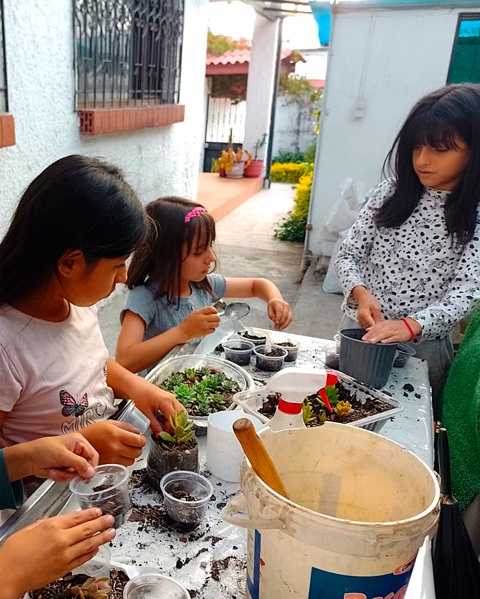
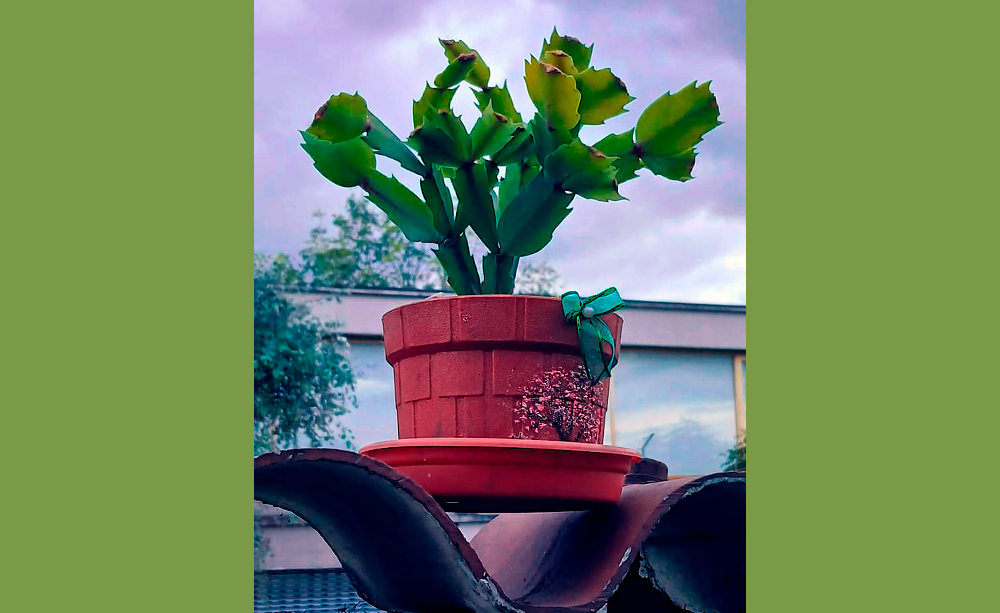

Origen
Mariany’s Garden es un negocio dedicado a la venta de plantas suculentas, con un enfoque único. Fundado en 2020 por “Doña Mariani”, una jardinera y agricultora con 60 años de experiencia, y con el objetivo de dar a conocer sus productos ornamentales, además de abordar la “crisis de la mediana edad”.
Este proceso se lo puede describir como un período de transición emocional y existencial que muchos adultos experimentan alrededor de los 40-60 años, caracterizado por sentimientos de insatisfacción, ansiedad y búsqueda de propósito. A través de sus productos, Mariany’s Garden combina la belleza de las plantas suculentas con elementos y diseños atractivos en sus macetas para promover el bienestar mental y emocional en adultos mayores.


Doña Mariany
Mariany, también conocida como "Doña Mariany", es una agricultora de 70 años, la cual siempre ha estado para su familia y amigos. Cuando empezó su jubilación, en un principio, no tenía un objetivo para el resto de su vida.
No fue hasta que decidió empezar su propio jardín de plantas suculentas. Rápidamente, doña Mariany empezó a desarrollar un aprecio y un gran cariño al cultivar y cuidar nuevos retoños, hasta el punto de difundir un mensaje de amor y pertenencia con la nueva generación, al igual que con las personas que estaban a punto de iniciar esta nueva etapa de su vida.
En la actualidad, doña Mariany sigue cultivando y fabricando macetas decoradas con imágenes pintadas a mano para quienes lo necesiten, con el objetivo de dejar un legado con sus ideales, y que estos vuelvan a florecer.
Propósito en su significado
Surgió de la idea de cómo las plantas pueden servir como seres de compañía y rehabilitación. Las suculentas no solo son resistentes y fáciles de cuidar, sino que representan resiliencia y crecimiento lento, cualidades que resuenan con las experiencias de vida de los adultos mayores.
Nuestro objetivo principal es mitigar la crisis de la mediana edad, que puede manifestarse como depresión leve o aislamiento social en adultos de 40-60 años. Las plantas suculentas, permiten experimentar logros pequeños pero significativos, como regar y ver crecer una planta, lo que fomenta un sentido de control y propósito.

Causas de la crisis de mediana edad
● Culturales: estereotipos negativos del envejecimiento. Muchos dicen que al momento en que llegas a la mediana edad, lo único que puedes hacer es descansar y mantenerte satisfecho con tus logros de la juventud; sin embargo, este no es un pretexto como para dejar de tener metas y aspiraciones en esta vida. Evitando que personas mayores tengan responsabilidades o sean tratadas de manera conservadora y limitada.
● Físicas: La menopausia, baja testosterona o declive físico es uno de los limitantes que pueden ser catalogados como inevitables, ya que con el tiempo el cuerpo pierde fuerza y necesita cuidados específicos, al igual que una rutina especializada.
● Familiares: El abandono en núcleos familiares hace de las personas mayores un objeto del cual su sentido, uso e importancia ya no tiene la misma relevancia como era en el pasado, provocando un descuido en su cuidado y excluyéndolas de actividades familiares. Otro factor importante es el síndrome del duelo, proceso por el cual la persona no puede superar la pérdida de un ser querido y se encierra en una burbuja de negación y reprimenda social con el objetivo de mitigar estos sentimientos.
● Profesionales / Financieras: El estancamiento laboral e inestabilidad económica forma parte del ámbito político y económico, ya que, debido a las nuevas generaciones en cuanto a avances tecnológicos y optimización artificial de trabajadores, muchas personas con edades entre los 40 y 50, que aún tienen deseos y fuerzas de trabajar, son excluidas e incluso despedidas de sus puestos, provocando un sentimiento de impotencia.
Consejos de superación
1. Acepta el cambio: El cambio forma parte de nosotros y de la vida misma, una vez asimiles que esta etapa no es el fin, sino el inico de nuevas formas de ver el mundo, de intentar cosas que antes no podías en el pasado y sobre todo, concectar contigo mismo y el resto del mundo. ¡Clickeame para más información!
2. Encuentra propósito: Prueba hobbies nuevos, retoma viejos hábitos, haz que el tiempo que no tenías antes te permita encontrar nuevas formas de ver el mundo. Viajar, aprender y las actividades extrovertidas pueden ayudar a estimular tu actividad física y psicológica. ¡Clickeame para más información!
3. Autocuidado: El ejercicio, el sueño y sobre todo la rutina son grandes detonadores para que tu cuerpo y mente se mantengan activos, además de saludables. Puedes adaptar cualquier práctica para integrarla a tu calendario de objetivos y actividades, tal vez reconectar con familiares y amistades pasadas.¡Clickeame para más información!
4. Cambia la percepción: Practica el concepto de la gratitud; muchas veces no aceptamos o rechazamos lo que ya tenemos, y muchas veces esta negación hace que al final cerremos puertas que a lo mejor aún podían abrirse, e inclusive cerrar algunas que ya llevaban años abiertas. Toda etapa de nuestra vida tiene un propósito, y Mariany's Garden te ofrece la oportunidad de empezar con ello.

Ayuda y Acción
Respeta los cambios en la persona y ayúdala a adaptarse a un nuevo modo de vida que beneficie su estabilidad emocional y sentimental. Muchas veces pensamos que cuidar a una persona es solamente atender sus necesidades y atenderla durante largos períodos de tiempo como si de un paciente se tratase. Sin embargo, formar parte de su vida y ayudarlo con sus objetivos y situaciones diarias es más que suficiente.
Aprovecha el tiempo, comparte momentos y tiempo de tu vida; si no encuentras la manera de acercarte o empatizar con algún familiar o conocido que presente estos síntomas o situaciones de la vida, no hagas que tu primer instinto sea la retirada o la indiferencia; tu presencia es más importante y carga con un gran valor del que puedes creer.
La mediana edad representa tanto el cambio como el crecimiento; sin embargo, su estabilidad emocional y psicológica se ve envuelta en riesgos y eventos negativos causados de manera directa o indirecta.